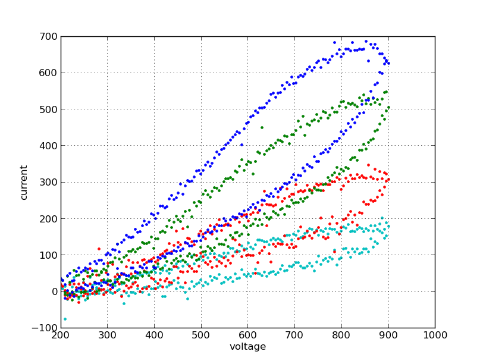
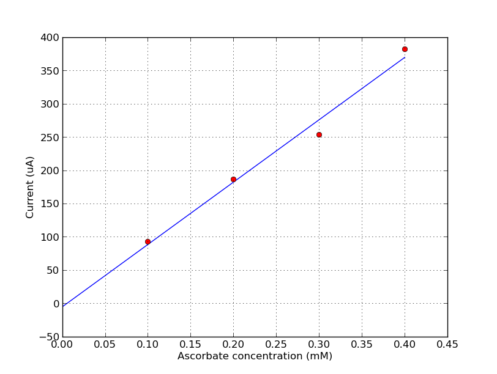

Ascorbate standard curve¶
Reagents & Equipment¶
- CheapStat
- Ag/AgCl reference electrode
- Pencil lead for counter and working electrodes
- 0.1M KCl solution in distilled or deionized water [1]
- Ascorbate
- 100mL volumetric flasks
- Electrochemisty cell - 100 mL glass beaker with electrode mount
- Micropipettes
Cyclic voltammetry parameters¶
- Start: 200 mV
- Stop: 900 mV
- Slope: 50 mV/sec
- Sample rate: 5 mV/sample
- Cycles: 1
Method¶
- Prepare a fresh stock of 10mM ascorbate in 0.1M KCl. [2]
- Using 100 mL volumetric flasks, prepare the following standard solutions of ascorbate
| Ascorbate concentration (mM) | Volume of 10mM stock (mL) |
|---|---|
| 0.1 | 1.0 |
| 0.2 | 2.0 |
| 0.3 | 3.0 |
| 0.4 | 4.0 |
- Transfer 80 mL of 0.1M KCl into the electrochemistry cell
- Place the electrodes into the solution
- Run the CV measurement using the parameters above
- Save data. This is a background measurement and is used to subtract from a data measurement.
- Pour 50 mL of 0.1mM ascorbate into the beaker and repeat measurement. Save data.
- Repeat for all ascorbate concentrations.
Sample data¶

Data Analysis¶
Subtract the background values from the data. Determine the current at 600mV for all samples. Plot a graph of ascorbate concentration (x-axis) versus measured current. Note. we have a python script available for subtracting the background, analyzing and plotting the data.

Footnotes
| [1] | To prepare 500 mL of a 0.1M KCl solution: transfer 33 mL of 3M KCl stock (LabChem Part # LC18795-1) into a 500 mL volumetric flask. Fill to line with distilled or deionized water. Place stopper in flask and invert several times to mix. |
| [2] | Example: 0.176g ascorbate in 100mL of 0.1M KCl = 10mM stock |